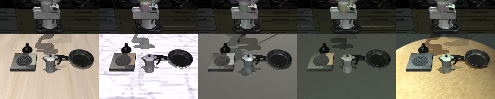

Test-time augmentation (TTA) is a well-known technique in computer vision. The idea is simple: instead of classifying a single image, you create several augmented copies (flipped, cropped, color-shifted), run the model on each, and average the predictions. It consistently improves accuracy on ImageNet-style benchmarks by 1–3%, and is standard practice in competition settings and medical imaging where robustness matters.
When we saw Decart's Lucy we thought: if we have a model powerful enough to do real-time video re-rendering, TTA should work for robots too. A robot manipulation policy takes a camera image and outputs motor commands. If the visual environment shifts at deployment (new lighting, different table, unfamiliar background), the policy breaks. Lucy's ability to controllably re-render an image into plausible visual variants is exactly what TTA for robotics needs as its augmentation engine. The question was whether TTA would transfer from discrete class labels to continuous robot action spaces.
If we render N visually different versions of the same physical robot scene — randomizing lighting, textures, or both — and aggregate the policy's action predictions across all N variants via element-wise median, the aggregated action should be more robust to visual distribution shift than any single prediction.
Unlike the mean (standard in classification TTA), the median is robust to outliers. If one variant produces a wildly wrong action due to an unlucky render, the median ignores it. This matters because action spaces are continuous and a single bad prediction can crash the robot.
To test this, we needed a controlled environment where we could (a) systematically degrade visual conditions and measure the effect on policy performance, and (b) simulate Lucy-style re-rendering by programmatically varying scene appearance. We used LIBERO-Plus, a simulated robotic manipulation benchmark built on MuJoCo, which gave us both: it ships with 50+ lighting perturbations per task, and its simulator lets us re-render the exact same physical state (same object poses, same robot configuration) under arbitrary lighting and texture parameters. This lets us prototype the full TTA pipeline — degrade, re-render, aggregate — in a setting where we can run thousands of trials with ground-truth success labels.
At each re-planning step, the simulator re-renders the current physical state with randomized visual parameters (lighting direction/intensity, table texture, wall texture). Each variant shares the exact same object positions and robot pose — only the appearance changes. The policy (pi0-fast, a 10-step action-chunking model) runs on each variant independently, and we take the element-wise median across all N action chunks before executing.

We evaluated on LIBERO-10 (tabletop manipulation in LIBERO-Plus), focusing on the task most sensitive to visual shift: KITCHEN_SCENE3 ("turn on the stove and put the moka pot on it"). Under extreme lighting perturbations, the baseline policy drops from ~95% to as low as 62%.
With N=5 variants and combined (lighting + texture) augmentation, TTA recovers +18pp on light_41 (74% → 92%) and +24pp on light_43 (62% → 86%). All results are over 50 trials.
Texture-only augmentation is surprisingly effective even for lighting perturbations, suggesting the median filters out appearance noise regardless of which axis generated it. Combined augmentation provides the strongest overall recovery.
We swept N from 1 (baseline) to 15. The gains are steep early and diminish fast: N=3 captures roughly 70% of the total lift, N=5 captures ~88%. Beyond N=9, performance actually decreases — with too many diverse augmentations, the median drifts away from optimal.
We demonstrated one instance of zero-shot robustness improvement via TTA: on a specific task, under specific lighting degradations, median-aggregating 3–5 re-rendered variants recovers 18–24 percentage points of lost success rate with no retraining. That's a positive signal, but it's far from a general proof that TTA is broadly useful for robot policies.
What we don't know yet:
That said, the direction is promising. As on-device compute continues to grow on robot platforms, the cost of running N=3–5 forward passes becomes increasingly trivial. TTA requires no architectural changes, no retraining, no new data — just more inference. If the trend of shipping more compute to the edge continues, a robustness layer like this starts to look essentially free.